무한 DOM 렌더링
성능 개선기
FE플랫폼 김민규
안녕하세요, 무한 DOM 렌더링 성능 개선기에 대해 발표할 FE플랫폼 김민규입니다.
성능 개선기
Flicking이란 라이브러리의 성능 개선기입니다.
Flicking?
발표를 시작하기에 앞서, 잠깐 Flicking이라는 라이브러리에 대해 설명 드리자면
Carousel UI
라이브러리
Flicking은 네이버의 대표적인 캐로셀 UI 라이브러리입니다.
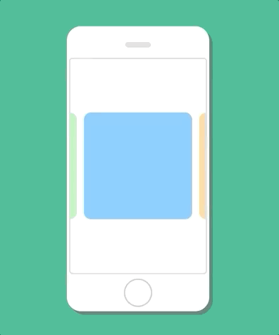
캐로셀, 혹은 슬라이더라고 불리는 UI는 그림과 같이 여러 개의 패널을 사용자의 동작에 따라 넘겨볼 수 있는 형태의 UI를 말합니다.
Flicking을 사용하시면 보이는 것처럼 다양한 UI형태를 쉽게 제작하실 수 있습니다.
오픈소스입니다!
Flicking은 오픈소스 라이브러리이고
본론으로
들어가기 전에..
본론으로 들어가기 전에 먼저

직접 확인해봅시다
데모 세션 진행/Infinite가 뭔지 설명
시작은..
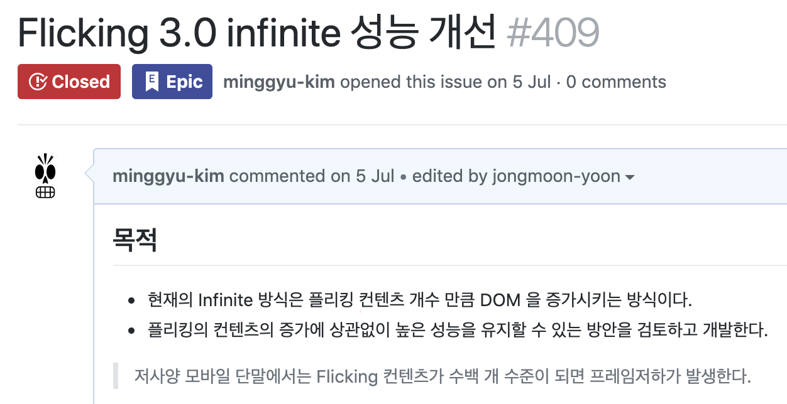
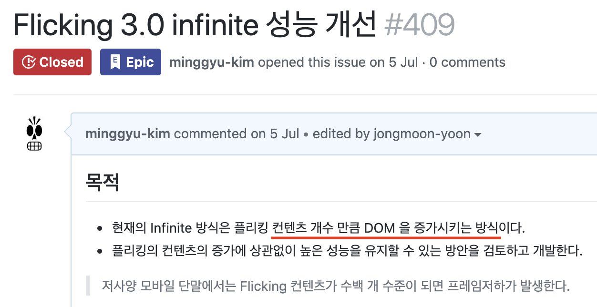
제 경우 이미 성능 문제가 심각할거라는 것을 알고 있었어요
DOM 증가? 성능 하락?
대신에 우선 앞서 이야기했던 부분을 좀 이어서 해볼게요
아까, DOM이 계속 증가하는 것이 성능 문제를 야기할 것이라고 얘기를 했습니다.
"태생부터 느린 DOM"
- 자바스크립트 성능 최적화
DOM 조작: 🐌
실질적으로는 DOM 자체가 느린건 아니구요, DOM 조작이 느린겁니다.
element.innerHTML = "안뇽하세용";
| JS |
=>
element의 내용물을 좀 바꿔주렴..
|
DOM |
DOM
- HTML parsing
- 기존 child 제거
- child 엘리먼트 생성
- 엘리먼트 크기 재계산
- ...
주로 느린 것들:
- 렌더링
- 크기 재계산
그 중에서도 특히나 느린 것이, 렌더링과 엘리먼트 크기 재계산과 관련된 조작인데
 플리킹은 여기 보이는것처럼, 기존에 무조건 패널의 개수만큼 엘리먼트를 증가시키는 방식을 사용했었습니다.
그래서, 성능에 문제가 있을 것임이 확실하게 보이는 상황이었죠.
플리킹은 여기 보이는것처럼, 기존에 무조건 패널의 개수만큼 엘리먼트를 증가시키는 방식을 사용했었습니다.
그래서, 성능에 문제가 있을 것임이 확실하게 보이는 상황이었죠.
주로 느린 것들:
- 렌더링
- 크기 재계산
먼저, Flicking에서 처음으로 시도했던 렌더링 비용을 낮추는 방법에 대해 알아봅시다
두 가지 옵션
구현한 뒤 테스트하긴 좀..
가장 단순한 형태로 테스트
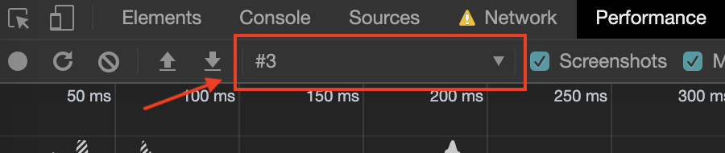
 최대 5개
최대 5개
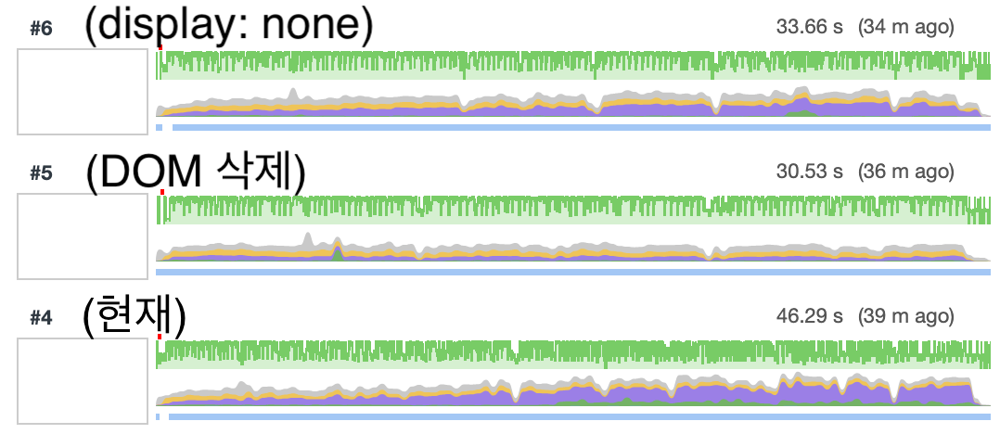
엘리먼트 삭제!
실제 구현해보니..
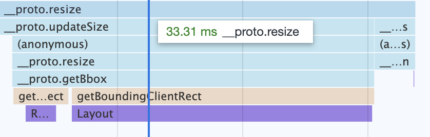
구현 전
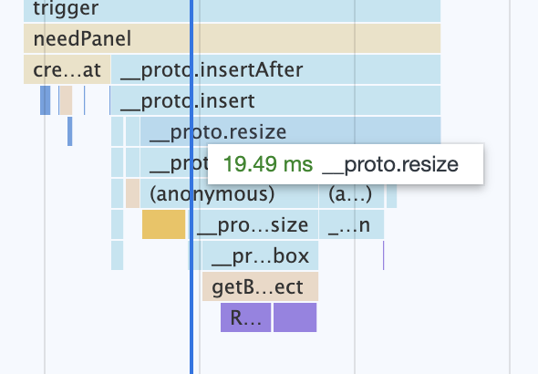
구현 후
33.31ms => 19.49ms (-41.49%)
대략 1.6배
1.6배 상승했습니다. 하지만 제가 발표 제목으로 건 20배 성능 향상에 비해서는 아직 택없이 모자라죠
좀 더 세부적으로..
그래서 여기서 좀 더 세부적인 최적화를 수행했었습니다.
분석 & 개선
일단 기본적으로 방식은 분석 이후 이를 개선하는 것입니다.

병목을 찾습니다
제일 중요한 것은, 성능 문제를 일으키는 가장 큰 병목을 찾는 것인데.

저희의 무기
Chrome의 Devtool을 이용하는 것입니다.
퍼포먼스 탭에서
제일 긴(오래 걸리는) 것 탐색
기본적으로는, 퍼포먼스 탭에 나타나는 하나의 블락에서, 시간이 가장 오래 걸리는 스크립트를 찾아 이를 개선하면 되는데요, 예를 들어 보이겠습니다.
1
불필요한 스타일 쓰기 제거
 플리킹 개선 전에 찍은 퍼포먼스 탭의 모습인데요, 유달리 긴 함수가 하나 보입니다.
거기에 특히나 아래쪽을 보시면 setPosition이 이 함수의 대부분의 시간을 차지하고 있는 것으로 보입니다.
플리킹 개선 전에 찍은 퍼포먼스 탭의 모습인데요, 유달리 긴 함수가 하나 보입니다.
거기에 특히나 아래쪽을 보시면 setPosition이 이 함수의 대부분의 시간을 차지하고 있는 것으로 보입니다.
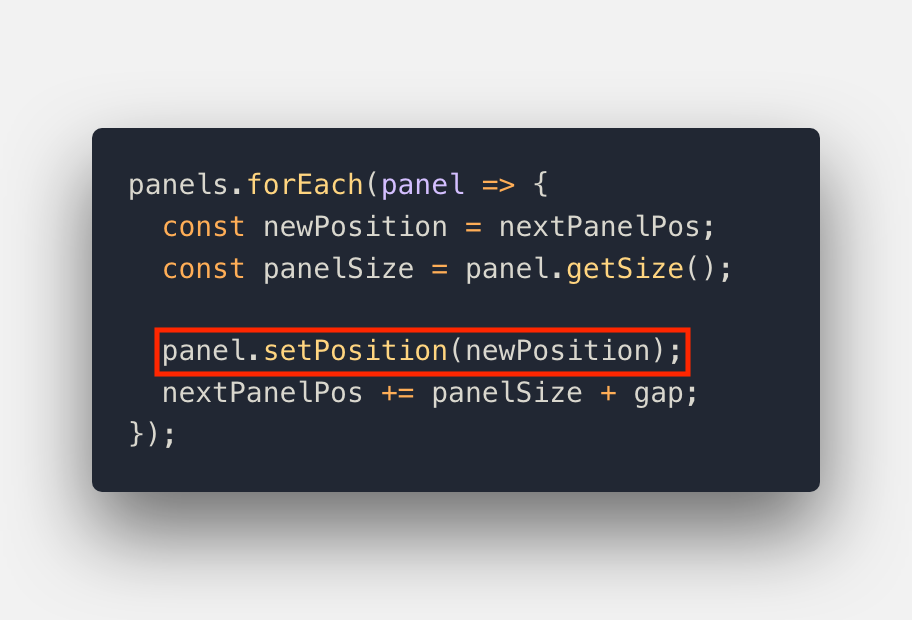
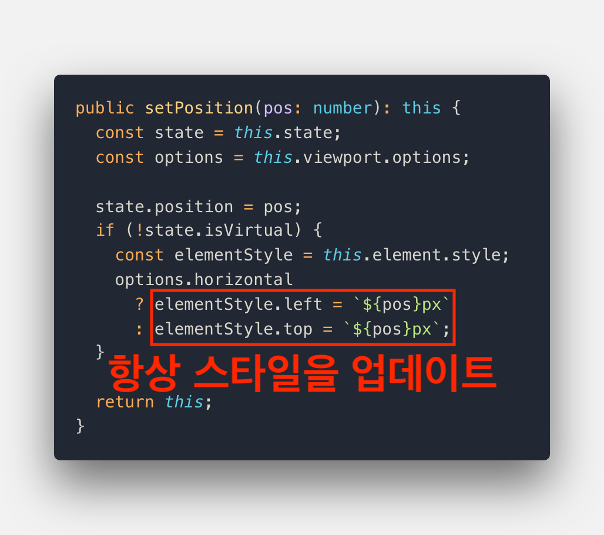
style의 left/top 업데이트
=> Layout 발생
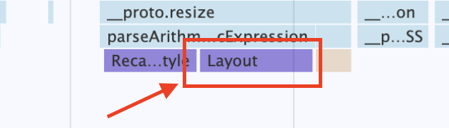
해결하기 위해
이런 것들을 적용했습니다
- 값 동일시 CSS 업데이트 X
- 엘리먼트 안보일시 업데이트 X
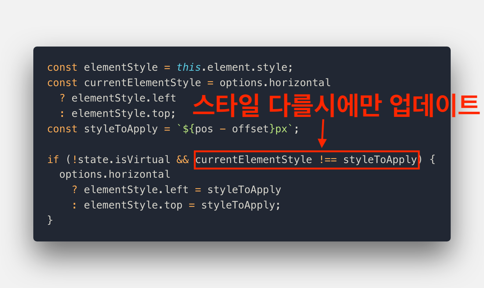
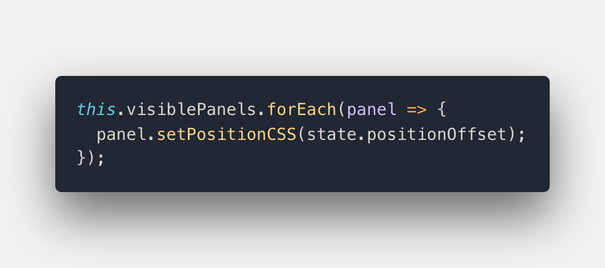

18.54ms => 1.8ms (-90.29%)
한 샘플 => 오류 가능성


평균 수행시간 비교
16.69ms => 1.76ms (-89.45%)
2
스타일 읽기/쓰기 배칭(batching)
 제가 배칭이 필요한 가장 대표적인 경우라고 생각하는 사진입니다.
제가 배칭이 필요한 가장 대표적인 경우라고 생각하는 사진입니다.
무수한 보라색 조각들
=> 배칭이 필요하다는 신호
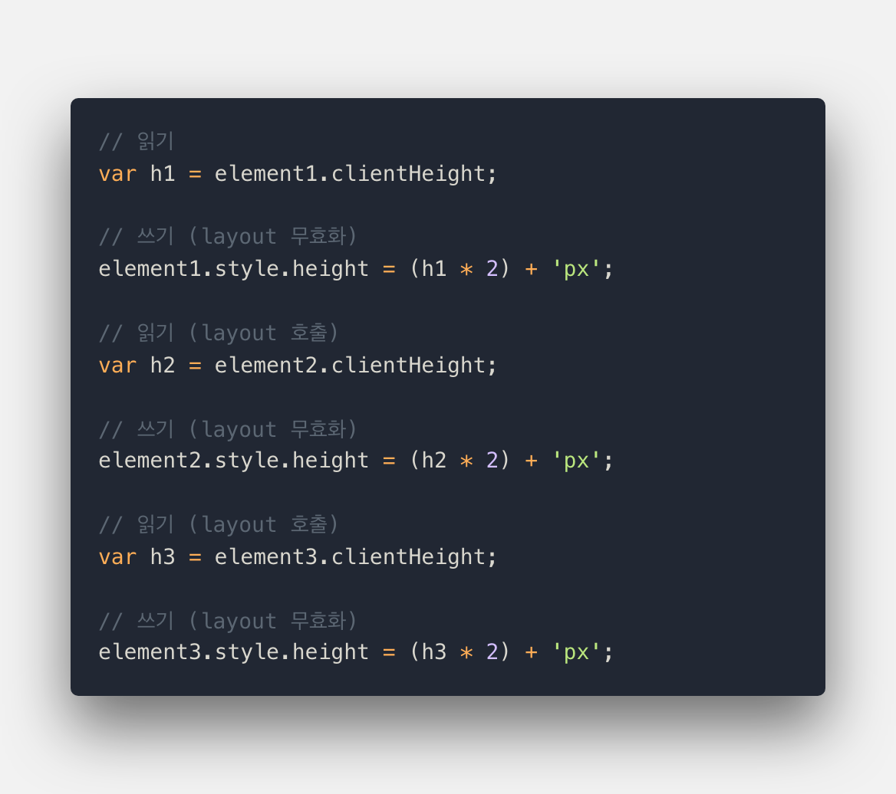
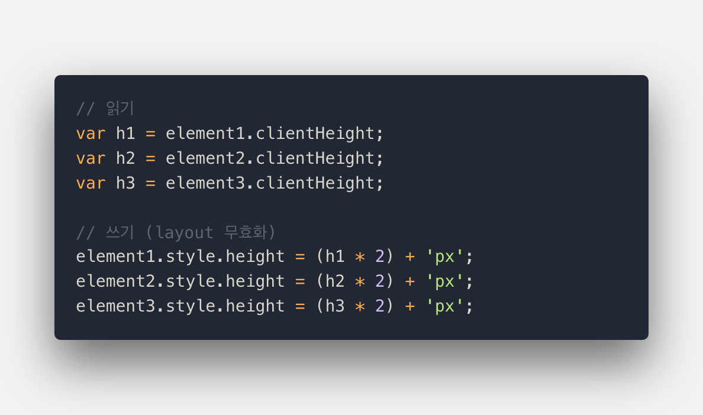
Flicking의 경우
"appendChild"와 "getBoundingClientRect"를 반복
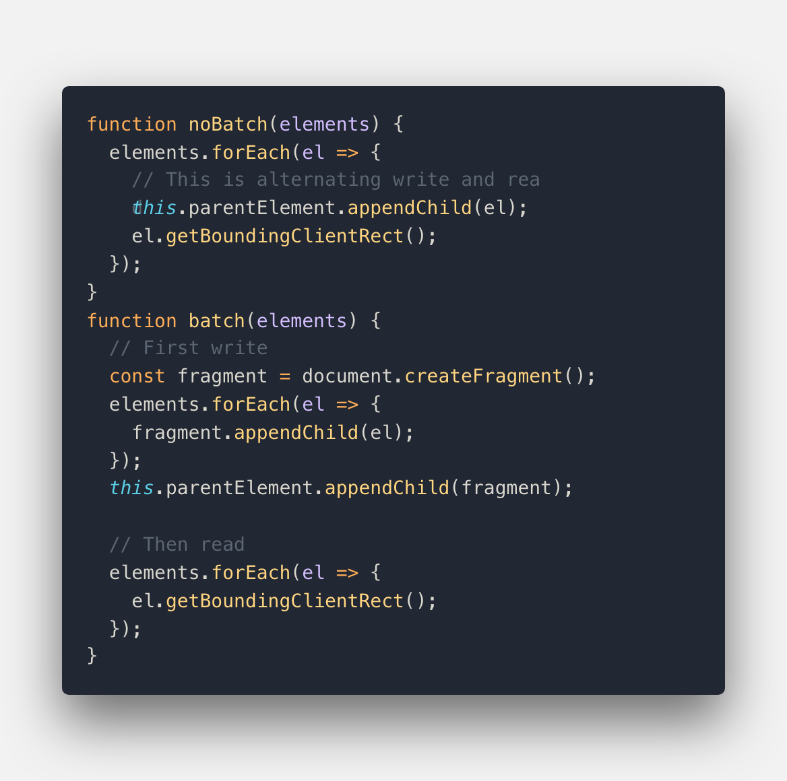

2725.5ms => 229.5ms (-91.6%)
저렇게 극단적이지 않아도
적용 가능합니다
패널 추가시에 적용

개선 전

개선 후
패널 3000개 추가시
평균 소모 시간
5894.69ms => 154.52ms (-97.38%)
3
레이어 크기 유지
크롬 Devtools에는
Layers탭이 있습니다

레이어↑ => 메모리↑
성능을 올리진 못했습니다
대신,
메모리 사용량 유지를 통한 크래시 방지

개선 전(위) / 개선 후(아래)


평균 수행시간: 198.15ms => 8.60ms (-95.66%)
최대 수행시간: 396.09ms => 17.82ms (-95.50%)
실행시간 1/20
모든 케이스에 대해서는
20배 성능 향상
좀 더 일반적인 경우를 본다면
성능을 더 높일 수 있습니다!
일반적으로는..
패널의 크기를
전부
계산할 필요가 없습니다
isEqualSize
하나만 계산하고
나머지는 계산된 값을 사용
창 크기가 변해도
패널의 크기는
변하지 않습니다
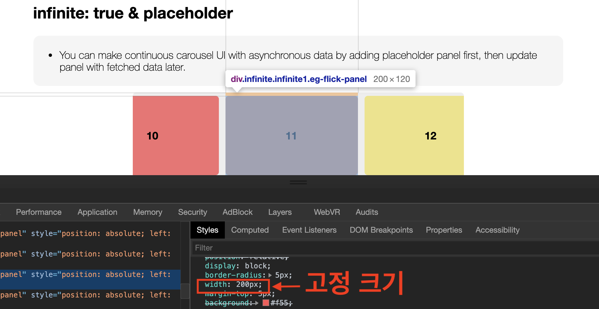
너비/높이가 고정 크기
isConstantSize
크기 재계산을 건너뜁니다

옵션 미적용시(268.41ms)

isEqualSize 적용시(44.17ms)

isConstantSize 적용시(36.68ms)
미리 canvas를 통해 font size 계산하는 파일 가져와서 그것으로 교체